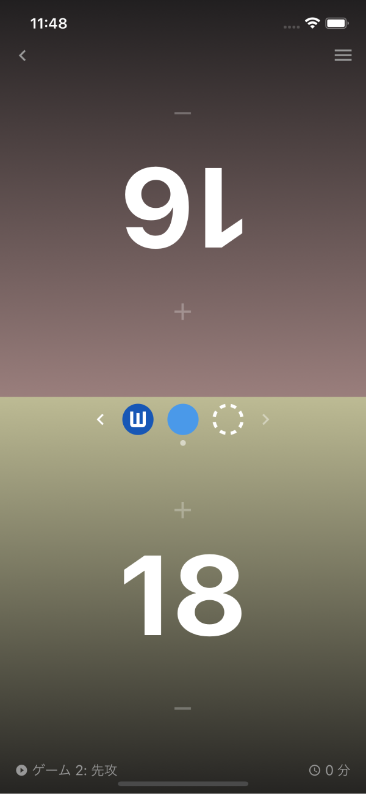

ライフカウンター
一般的なライフカウンターに加えて、ゲームごとの勝敗や先手後手、マリガン回数の記録も行えます。またライフの履歴も見ることができます。
一般的なライフカウンターに加えて、ゲームごとの勝敗や先手後手、マリガン回数の記録も行えます。またライフの履歴も見ることができます。
Life Counter
In addition to the general life counter, you can also record the number of wins, losses, play-first, draw-first, and mulligans in each game. You can also view your life history.
In addition to the general life counter, you can also record the number of wins, losses, play-first, draw-first, and mulligans in each game. You can also view your life history.

対戦の記録
これまで行ったマッチを日別の一覧で見ることができます。使用したデッキ、対戦相手のデッキ、ゲームごとの勝敗などが一目瞭然です。
これまで行ったマッチを日別の一覧で見ることができます。使用したデッキ、対戦相手のデッキ、ゲームごとの勝敗などが一目瞭然です。
Matches List
You can view a list of matches you have played so far by day. You can see at a glance the decks you used, your opponents' decks, and the win and lose of each game.
You can view a list of matches you have played so far by day. You can see at a glance the decks you used, your opponents' decks, and the win and lose of each game.
対戦の分析
デッキの勝率推移や、対戦デッキごとの勝率、マリガン回数の分布などを見ることができます。また、使用デッキや期間を自由に変更して分析することもできます。
デッキの勝率推移や、対戦デッキごとの勝率、マリガン回数の分布などを見ることができます。また、使用デッキや期間を自由に変更して分析することもできます。
Match Analysis
You can view the win rate trends of decks, the win rate of each deck played, and the distribution of the number of mulligans. You can also freely change the deck used and the time period for analysis.
You can view the win rate trends of decks, the win rate of each deck played, and the distribution of the number of mulligans. You can also freely change the deck used and the time period for analysis.
デッキ構築
好きなカードイラストや言語を選んでデッキ構築をすることができます。また、欲しいものリスト・フォイル管理・スナップショット保存などを使うこともできます。
好きなカードイラストや言語を選んでデッキ構築をすることができます。また、欲しいものリスト・フォイル管理・スナップショット保存などを使うこともできます。
Deck Construction
You can choose your favorite card illustrations and languages to build your deck. You can also use want list, foil management, snapshot saving.
You can choose your favorite card illustrations and languages to build your deck. You can also use want list, foil management, snapshot saving.